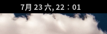
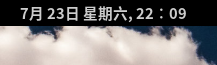

2016.08.01日更新
该问题不止在Fedora中出现，在ubuntu GNOME桌面版版也出现这个问题，是GNOME桌面环境的问题。修改方法与Fedora相同。
Fedora 23,Fedora 24，ububtu GNOME桌面版顶栏中文日期及星期显示不全的问题，Fedora 23时找到修改的办法，未做记录，Fedora 24时又遇到这个问题，于是又翻找资料解决问题，为避免下次麻烦，将该问题以及问题解决办法记录下来，以备后用。
问题描述
顶栏中文日期显示“XX月XX”，后面“日”字不显示，以及星期几没有“星期”。

解决办法
1、在 /usr/share/locale/zh_CN/LC_MESSAGES文件夹有gnome-desktop-3.0.mo文件，先将gnome-desktop-3.0.mo进行备份，然后用命令 msgunfmt将其还原成.po文件。
1 | sudo msgunfmt gnome-desktop-3.0.mo -o gnome-desktop-3.0.po |
2、编辑gnome-desktop-3.0.po文件，在文件中msgstr部分的%e后面加个“日”就可以显示出正常的日期（XX月XX日）。
3、把%a改成%A就可以将星期正常显示。
4、将改好的.po文件用msgfmt变成.mo文件，覆盖gnome-desktop-3.0.mo文件。
1 | sudo msgunfmt gnome-desktop-3.0.po -o gnome-desktop-3.0.mo |
5、输入alt+f2，键入命令 r 并回车，重启gnome即可。

修改后的文件部分内容
1 | msgid "%R:%S" |